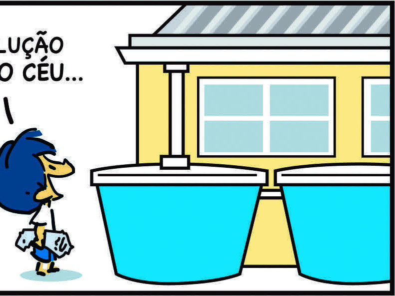

Na atividade 4, a resposta deve destacar como incluir relatos de moradores pode sensibilizar o público e destacar a urgência de ações para resolução dos problemas apresentados.
Na atividade 5, os estudantes devem destacar como a situação descrita na matéria pode sensibilizar as pessoas, promovendo a compreensão da importância de conservar e preservar os recursos hídricos em seu dia a dia.
Estimule-os a descrever outras estratégias que podem ser utilizadas para sensibilizar as pessoas em relação à preservação dos recursos hídricos.
4)
POR QUE É RELEVANTE INCLUIR ENTREVISTAS E RELATOS DE MORADORES EM REPORTAGENS?
Porque eles oferecem uma perspectiva real e humana sobre o tema da reportagem.
Além disso, enriquecem a matéria, pois transmitem mais fidelidade ao assunto.
5)
DE QUE MANEIRA A SITUAÇÃO DESCRITA NA MATÉRIA PODE SENSIBILIZAR AS PESSOAS SOBRE A IMPORTÂNCIA DE CONSERVAR OS RECURSOS HÍDRICOS NO DIA A DIA?
Resposta pessoal.
TIRINHA
AS TIRINHAS, AO CONTRÁRIO DAS HISTÓRIAS EM QUADRINHOS, SÃO COMPOSTAS DE POUCOS QUADROS OU PAINÉIS, GERALMENTE DISPOSTOS EM SENTIDO HORIZONTAL.
ELAS CONTAM UMA HISTÓRIA DE FORMA BREVE E HUMORÍSTICA OU REFLEXIVA.
CADA QUADRO ILUSTRADO PODE OU NÃO SER ACOMPANHADO POR TEXTOS, COMO UM DIÁLOGO ENTRE PERSONAGENS OU UMA NARRATIVA QUE COMPLEMENTA AS IMAGENS.
LEITURA EM FOCO
JUNTE-SE A ALGUNS COLEGAS E LEIAM A TIRINHA A SEGUIR.
FALTOU ÁGUA?
AQUI EM CASA NÃO TEMOS ESSE PROBLEMA...
QUEM DIRIA...
© Alexandre Beck/Acervo do cartunista
A SOLUÇÃO CAIU DO CÉU...

© Alexandre Beck/Acervo do cartunista
Ao explorar o universo das tirinhas, aprecie a criatividade compacta e a habilidade de transmitir mensagens impactantes em poucos quadros.
Comente com os estudantes que as tirinhas costumam ser encontradas em jornais, revistas, livros e na internet.
Sua popularidade se deve à capacidade de transmitir uma mensagem de maneira concisa, divertida e reflexiva.